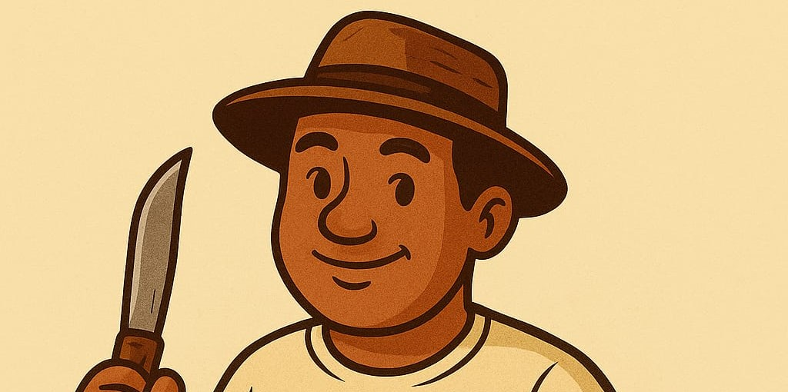

Entre Doces e Queijos
Laticínios e Queijos
Doces e Delícias
Mercearia e Petiscos Salgados
Sobre Nós
Somos a Entre Doces e Queijos, sua parada obrigatória para os melhores laticínios e delícias artesanais. Nossa missão é levar até a sua mesa o sabor autêntico e a qualidade que você merece, direto dos produtores.
De queijos minas frescos a doces de leite de tacho, cada item é selecionado com carinho e paixão pela tradição. Nossos produtos são perfeitos para o café da manhã, o lanche da tarde ou para compor uma mesa de frios inesquecível.
Nosso foco é na experiência prática de compra! Clique nos produtos acima para fazer seu pedido de forma rápida e segura diretamente pelo WhatsApp.